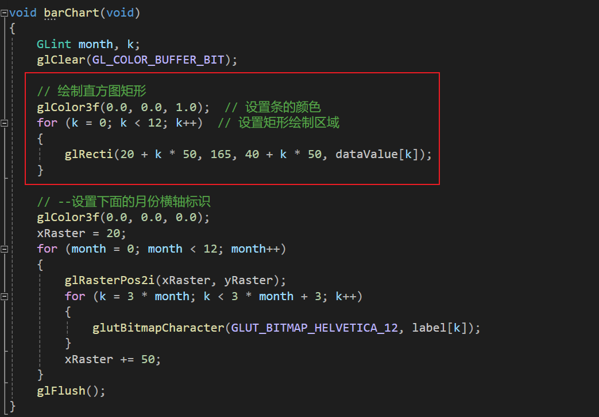
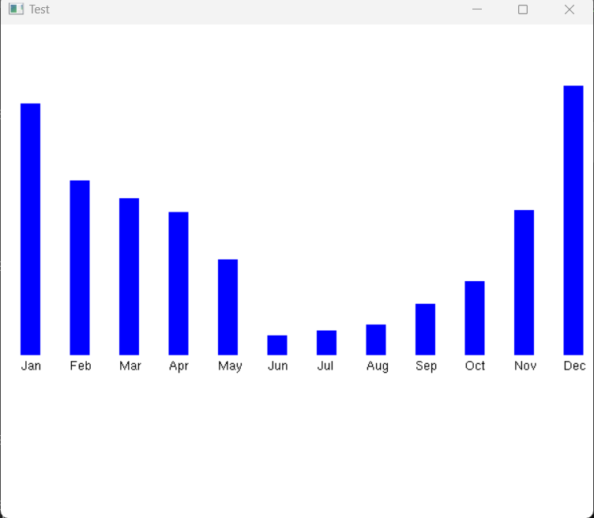
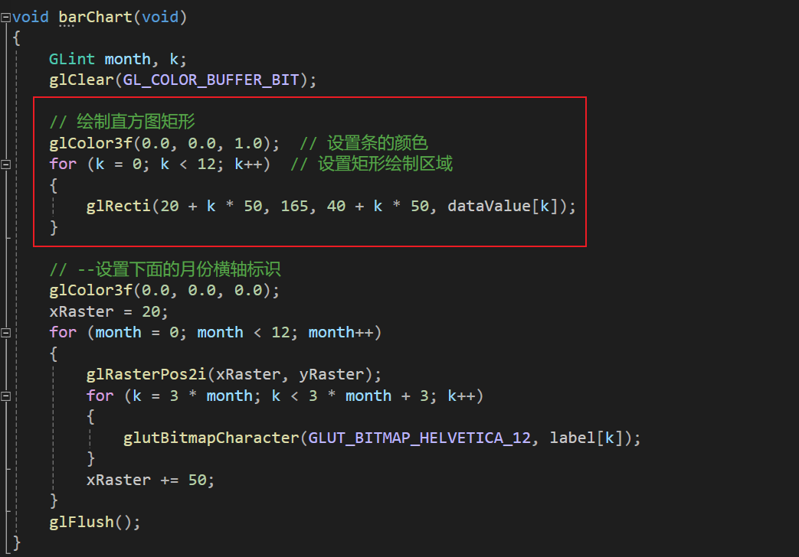
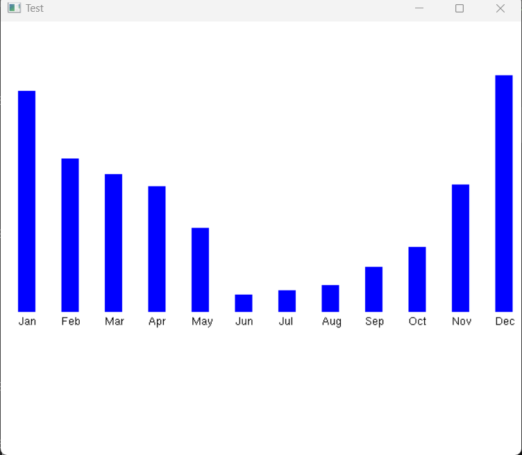

4.输出图元
2.绘制直方图
除了这里,还有下面main里面glutDisplayFunc(barChart);其余都和上面的程序一样

结果

总结:通过对比上一个绘制折线图的程序,会发现固定的部分,初始化部分设置窗口大小和投影显示范围,glut的窗口调用是固定的.

结果

总结:通过对比上一个绘制折线图的程序,会发现固定的部分,初始化部分设置窗口大小和投影显示范围,glut的窗口调用是固定的.